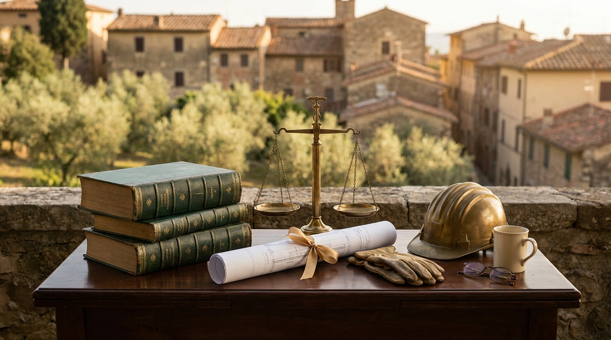

Lavori in casa e sicurezza: quando il committente privato risponde dell'infortunio
Affidare una riparazione elettrica o un piccolo intervento in casa non è privo di rischi giuridici. Quando il lavoratore si infortuna, ci si chiede se anche il committente privato possa rispondere. La giurisprudenza penale offre indicazioni utili: il committente non è sempre responsabile, ma in certi casi può esserlo. Vediamo i confini effettivi di questo obbligo.

Il problema in sintesi
È una situazione frequente: un privato ingaggia un artigiano - un elettricista, un imbianchino, un muratore - per lavori in casa. Durante l'esecuzione, il lavoratore si infortuna, talvolta in modo grave. La domanda che ricorre è se il committente, semplice proprietario dell'abitazione e privo di qualifica imprenditoriale, possa essere chiamato a rispondere penalmente.
La risposta non è netta. Dipende dall'effettivo grado di ingerenza del committente nell'organizzazione del lavoro e dalla natura dell'intervento. Conviene quindi distinguere con precisione i diversi scenari, evitando sia gli allarmismi sia le semplificazioni.
Inquadramento normativo
Il primo riferimento è la distinzione tra lavoro autonomo e responsabilità del committente. L'artigiano che opera in proprio è di regola responsabile della sicurezza della propria attività: sceglie i mezzi, organizza l'esecuzione, conosce i rischi del mestiere. Questo principio resta il punto di partenza.
Il secondo riferimento è l'art. 90 del D.Lgs. 81/2008. Va però collocato correttamente: la norma appartiene al Titolo IV, dedicato ai cantieri temporanei o mobili, cioè ai lavori edili o di ingegneria civile. Solo in questo ambito il committente, anche privato, assume obblighi specifici - tra cui la verifica dell'idoneità tecnico-professionale dell'impresa o del lavoratore autonomo (art. 90, comma 9). Per una semplice riparazione elettrica domestica, fuori dal contesto del cantiere, l'art. 90 non si applica automaticamente: occorre verificare se l'intervento integri o meno i presupposti del Titolo IV.
Esiste poi un piano più generale, di matrice penale. La responsabilità per lesioni o per omicidio colposo può fondarsi sulla cosiddetta posizione di garanzia ex art. 40, comma 2, c.p.: chi ha il dovere giuridico di impedire un evento risponde se non lo impedisce. Tale posizione, nel committente privato, non sorge per il solo fatto di aver commissionato un lavoro, ma può configurarsi quando egli si ingerisce concretamente nell'esecuzione, impone modalità pericolose o mette a disposizione attrezzature inidonee.
È utile precisare un punto spesso confuso. L'art. 2087 c.c. - che impone all'imprenditore di tutelare l'integrità del lavoratore - presuppone un rapporto di lavoro subordinato o assimilabile. Mal si adatta al rapporto con un artigiano autonomo e non trasforma il privato in datore di lavoro. Per questo, nei casi di infortunio dell'autonomo, il fondamento corretto della responsabilità del committente è la posizione di garanzia penale, non l'art. 2087 c.c.
Implicazioni pratiche
Per chi commissiona lavori in casa, il quadro si può riassumere così.
Se l'intervento è un piccolo lavoro affidato a un professionista autonomo, la responsabilità della sicurezza grava in via principale su quest'ultimo. Il committente privato non diventa garante per il solo fatto di aver dato l'incarico.
La situazione cambia quando il committente esce dal ruolo passivo: indica come eseguire il lavoro, sollecita modalità rischiose per risparmiare tempo, fornisce scale o utensili difettosi, o ignora una situazione di pericolo evidente. In questi casi può emergere una responsabilità concorrente.
Diverso ancora è il caso dei lavori edili veri e propri, dove operano gli obblighi del Titolo IV del D.Lgs. 81/2008. Qui la verifica dell'idoneità tecnico-professionale dell'impresa diventa un dovere preciso, la cui omissione può pesare.
Il criterio guida resta la diligenza proporzionata: al committente privato si chiede di verificare ciò che è ragionevolmente verificabile, non di sostituirsi a un professionista della sicurezza.
Cosa fare in concreto
- Affidare i lavori a imprese o artigiani regolarmente iscritti, verificando l'abilitazione dove prevista (per gli impianti, l'abilitazione ai sensi del D.M. 37/2008).
- Per gli impianti elettrici, idraulici e di gas, richiedere a fine lavori la dichiarazione di conformità prevista dal D.M. 37/2008: documenta la regolarità dell'esecuzione.
- Evitare di impartire direttive sulle modalità tecniche di esecuzione: lasciare al professionista l'organizzazione del proprio lavoro riduce il rischio di assumere una posizione di garanzia.
- Non mettere a disposizione attrezzature proprie potenzialmente inidonee; in caso di lavori edili, conservare la documentazione sulla verifica dell'idoneità dell'impresa.
- Per interventi di maggiore entità o riconducibili a un cantiere, è opportuno verificare preventivamente gli obblighi specifici applicabili.
Una lettura prudente
Le pronunce in materia non vanno lette come una responsabilità oggettiva di chiunque commissioni lavori in casa. Indicano piuttosto che il committente risponde quando il suo comportamento concreto ha contribuito a determinare il pericolo. La distinzione tra la responsabilità propria del lavoratore autonomo e quella eventuale e concorrente del committente resta il cardine della valutazione.
Ogni caso dipende dalle circostanze di fatto e merita un esame specifico.
---
*Contributo informativo a cura di Tamburro & Partners - Avv. Giuseppe Tamburro. Non costituisce parere legale.*
Ogni storia di lavoro ha i suoi tempi.
Se gestisci HR e vuoi un confronto su contenzioso, ispezioni o licenziamenti, scrivi allo studio. Ti rispondiamo entro un giorno lavorativo.